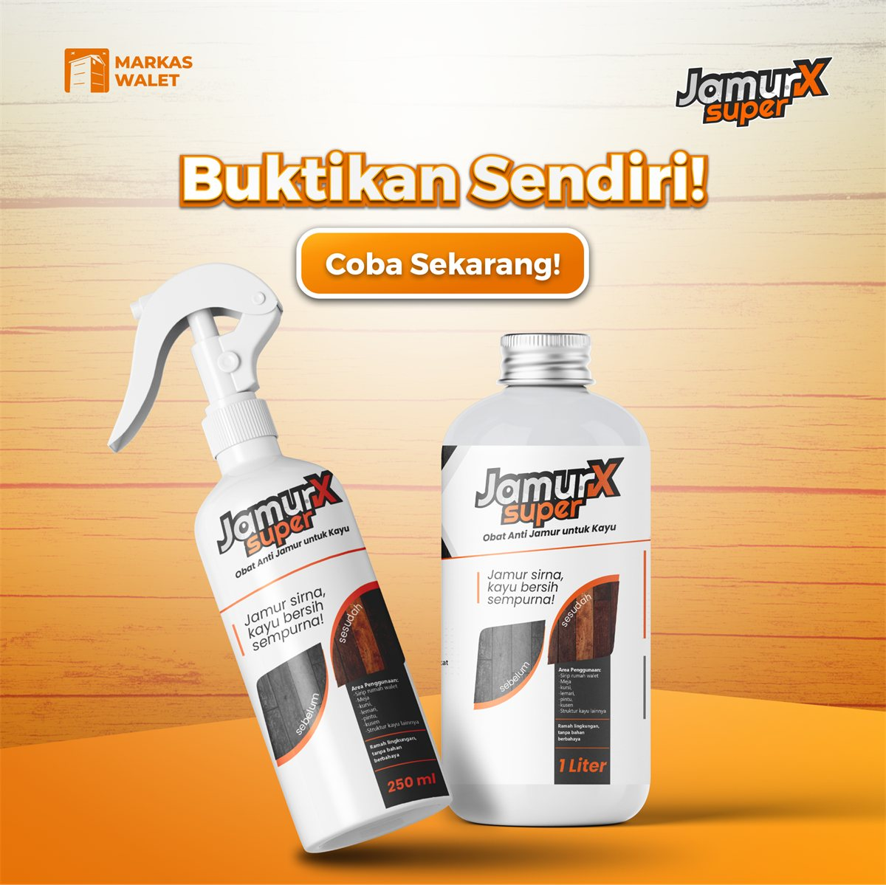
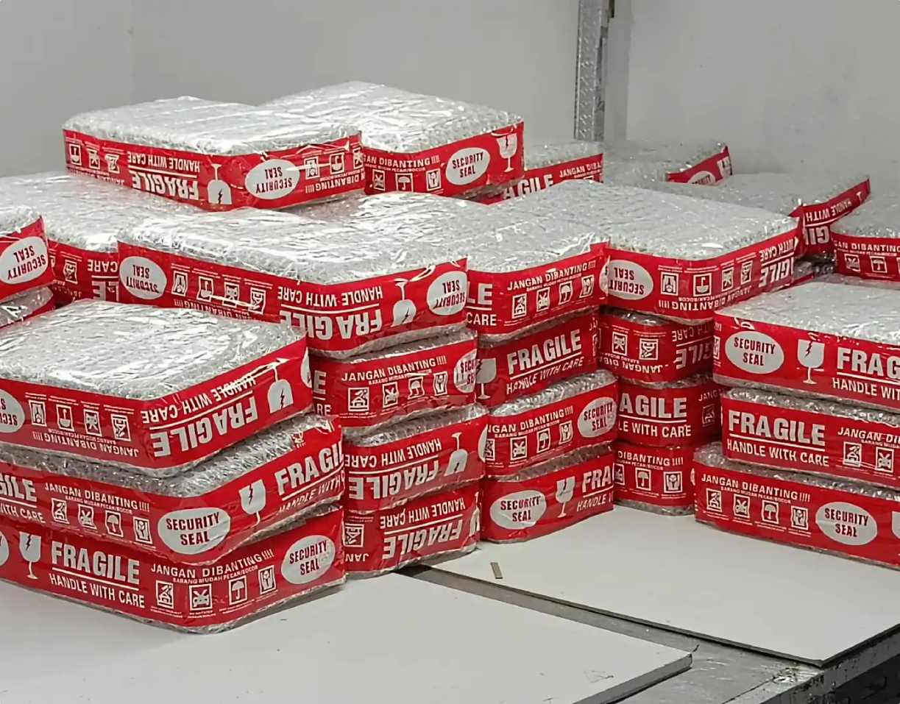
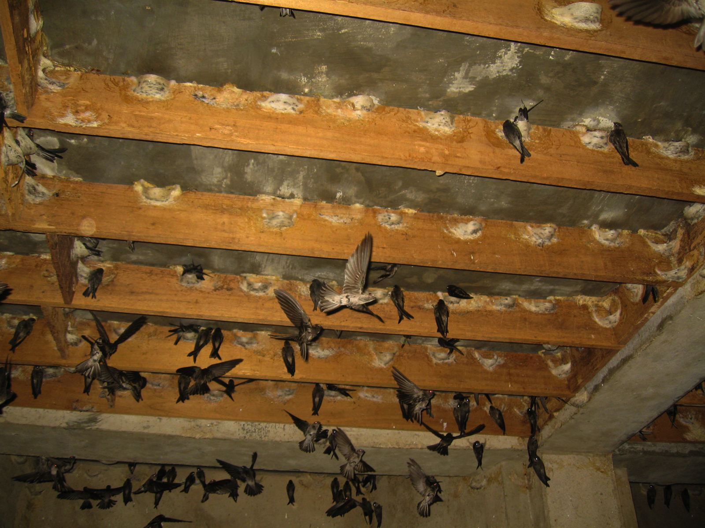
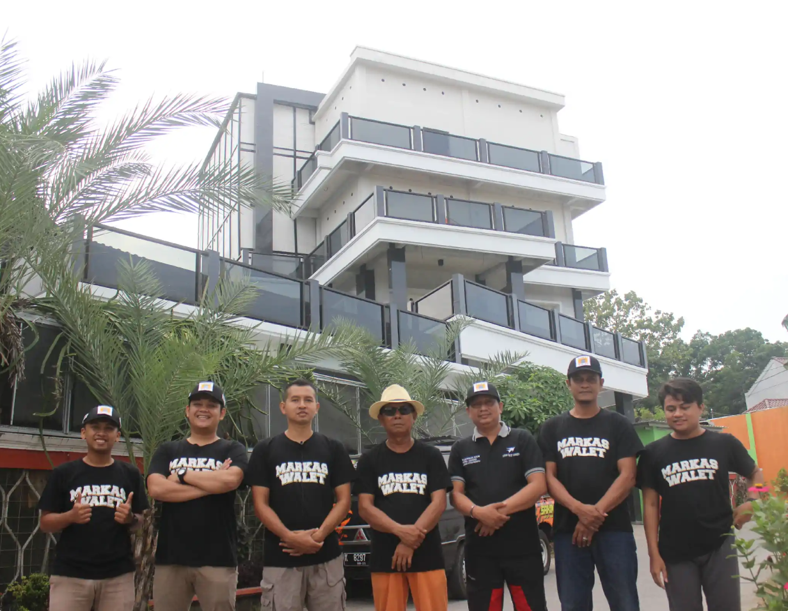

250 ml
- Kemasan
- Botol spray siap pakai
- Cocok untuk
- Mencoba & area kecil
- Pemakaian
- Semprot langsung
- Harga
- Hubungi kami
JamurX Super membasmi jamur dalam satu hari dan mencegahnya tumbuh kembali. Tanpa bau menyengat, aman jika terkena kulit.



Setiap pesanan dicek, dibungkus rapat, dan dikirim dari kantor Markaswalet supaya sampai dalam kondisi siap pakai.


Jika ada satu saja yang cocok, JamurX Super dibuat untuk Anda.
Bercak jamur muncul di papan sirip karena gedung lembap. Anda butuh pembasmi yang tuntas, bukan sekadar menutupi.
Berbahan organik, beraroma alami, dan aman jika terkena kulit.
Membasmi sekaligus mencegah. Encerkan 1:15 untuk perawatan rutin setiap 6 bulan.
Cocok juga untuk furnitur, pintu, kusen, lantai, hingga rumah kayu.
Cairan anti jamur yang diformulasikan khusus untuk menghilangkan dan mencegah pertumbuhan jamur sirip kayu rumah burung walet, 1000x lebih ampuh melindungi kayu.

Membasmi & mencegah jamur tumbuh kembali.
Tidak menyebabkan gatal, iritasi, atau luka bakar.
Tidak menyengat seperti produk lain.
Jamur hilang dalam satu hari.
Untuk berbagai jenis kayu: furnitur, pintu, kusen, lantai, & rumah kayu.
Formulanya sama. Pilih sesuai luas kayu yang perlu dirawat.
| Ukuran praktis250 ml | Ukuran besar1000 ml | |
|---|---|---|
| Kemasan | Botol spray siap pakai | Botol 1 liter |
| Cocok untuk | Mencoba & area kecil | Gedung luas & banyak sirip |
| Pemakaian | Semprot langsung | Langsung atau encerkan 1:15 |
| Harga | Hubungi kami | Hubungi kami |
| Pesan 250 ml | Pesan 1000 ml |
* Harga & ongkir dikonfirmasi langsung oleh admin via WhatsApp.
Hasil sebelum dan sesudah di papan sirip, plus video pemakaian langsung di gedung walet: dari menyiapkan cairan sampai sirip dilap bersih.

Jamur sirna, kayu bersih sempurna!
Tagline JamurX SuperCeritakan kondisi sirip dan gedung Anda. Tim Markas Walet bantu pilihkan ukuran dan jadwal perawatan yang tepat.
